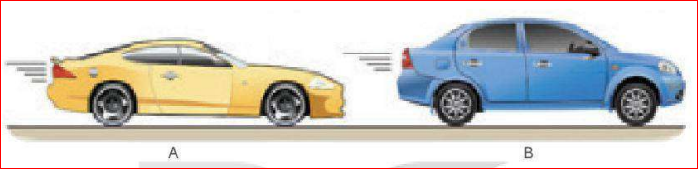
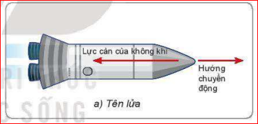
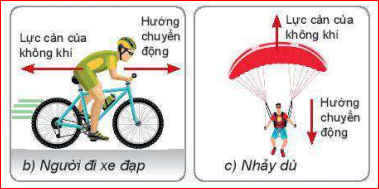
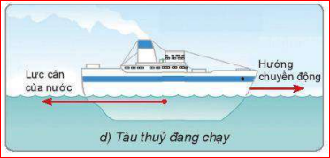
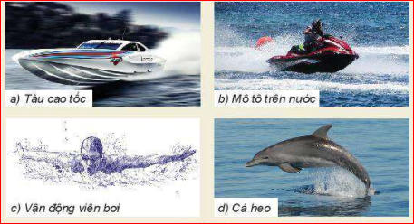
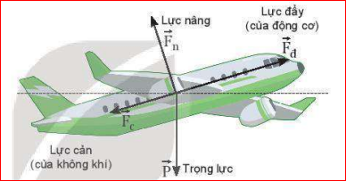
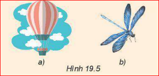
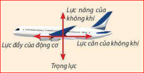
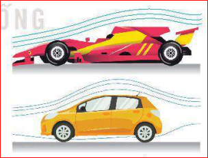

[Khung hình: Hình hai ô tô A và B]'">Thông thường thuật ngữ chất lưu được dùng để chỉ chất lỏng và chất khí.
Mọi vật chuyển động trong chất lưu luôn chịu tác dụng bởi lực cản của chất lưu.
Lực này ngược hướng chuyển động và cản trở chuyển động của vật.

[Khung hình: Hình 19.1 - Ví dụ về lực cản của chất lưu (Tên lửa, xe đạp, nhảy dù, tàu thủy)]'">
[Khung hình: Hình 19.1 - Ví dụ về lực cản của chất lưu (Tên lửa, xe đạp, nhảy dù, tàu thủy)]'">
[Khung hình: Hình 19.1 - Ví dụ về lực cản của chất lưu (Tên lửa, xe đạp, nhảy dù, tàu thủy)]'">a) Bằng cảm nhận trực giác, em thử đoán xem độ lớn của lực cản phụ thuộc vào những yếu tố nào?
b) Em hãy tìm những thí nghiệm để chứng minh cho những dự đoán của em.
Hướng dẫn:
a) Trực giác: Lực cản phụ thuộc vào tốc độ (đi xe đạp càng nhanh gió tạt càng mạnh), phụ thuộc vào hình dạng/tiết diện vật (cúi người đạp xe sẽ ít cản gió hơn là ngồi thẳng).
b) Thí nghiệm: Cho hai tờ giấy giống nhau rơi tự do, một tờ vo tròn, một tờ để phẳng. Tờ phẳng sẽ rơi chậm hơn nhiều do tiết diện cản gió lớn hơn (chứng minh hình dạng). Hoặc khua tay dưới nước từ từ và khua thật nhanh để cảm nhận lực cản thay đổi theo tốc độ.
1. Trong hình ở phần mở đầu bài học, ô tô nào chịu lực cản nhỏ hơn?
2. Nêu thêm một số ví dụ chứng tỏ lực cản của không khí liên quan đến hình dạng và tốc độ của vật.
Giải đáp:
1. Ô tô A chịu lực cản nhỏ hơn vì có thiết kế hình dạng thon gọn, mượt mà hơn (khí động học tốt hơn), làm giảm lực cản không khí so với ô tô B.
2. Ví dụ:
Lực cản của chất lưu (không khí, nước) phụ thuộc vào hình dạng và tốc độ của vật.
Khi vật chuyển động trong nước hay trong không khí thì ngoài lực cản, vật còn chịu tác dụng của lực nâng.
Ví dụ: Nếu cánh máy bay nghiêng đi một chút, chếch theo luồng gió, thì tăng thêm lực nâng tác dụng vuông góc với mặt dưới của cánh để nâng máy bay lên cao.
Nhờ có lực nâng:

[Khung hình: Hình 19.3 - Các lực tác dụng lên máy bay (Lực cản, lực đẩy, trọng lực, lực nâng)]'">
[Khung hình: Hình 19.4 - Lực nâng và trọng lực tác dụng lên tàu thủy]'">Lưu ý: Khi vật rơi trong chất lưu dưới tác dụng của trọng lực và lực cản của chất lưu thì đến một lúc nào đó vật sẽ đạt tới vận tốc giới hạn và sẽ chuyển động đều với vận tốc này.
Lực đẩy Archimedes học ở môn KHTN lớp 8 là trường hợp riêng của lực nâng vật đứng yên trong chất lưu.
Công thức tính lực đẩy Archimedes:
Trong đó:

[Khung hình: Hình 19.3 - Các lực tác dụng lên máy bay (Lực cản, lực đẩy, trọng lực, lực nâng)]'">
[Khung hình: Hình 19.4 - Lực nâng và trọng lực tác dụng lên tàu thủy]'">1. Chuồn chuồn không bị rơi xuống đất là nhờ khi vỗ cánh tạo ra luồng không khí đi qua cánh, sinh ra lực nâng khí động học cân bằng với trọng lực hướng xuống.
2. Khi lơ lửng, khí cầu chịu tác dụng của 2 lực cân bằng: Trọng lực \( \vec{P} \) (hướng thẳng đứng từ trên xuống) và Lực nâng của không khí - lực Archimedes \( \vec{F}_A \) (hướng thẳng đứng từ dưới lên). Vẽ hai lực này cùng giá, ngược chiều, độ dài bằng nhau.
3. Khi máy bay bay ngang ổn định, lực nâng cân bằng với trọng lực.
Khối lượng \( m = 500 \, \text{tấn} = 500,000 \, \text{kg} \).
Trọng lượng \( P = m \cdot g = 500,000 \cdot 9.8 = 4,900,000 \, \text{N} \).
Vậy lực nâng \( F_n = P = 4,900,000 \, \text{N} \) (hay 4.900 kN).
4. Khác biệt:
- Lực cản: Cùng phương, ngược chiều với hướng chuyển động, có tác dụng cản trở sự chuyển động của vật.
- Lực nâng: Phương thường vuông góc với hướng chuyển động, có tác dụng nâng đỡ, chống lại trọng lực giúp vật không bị rơi (hoặc nổi trên mặt nước).
Hình dạng khí động học
Người đầu tiên khởi xướng mô hình khí động học trên ô tô là nhà thiết kế nổi tiếng Eduard Rumpler, cha đẻ của ngành hàng không Đức.
Vào những năm 1930 - 1940, tại đường đua Le Mans (Pháp 1937), chiếc ô tô dung tích động cơ 1.7 lít đã gây sốc khi chiến thắng ngoạn mục trước những ô tô 2 lít. Bí quyết là cải tiến hình dạng sao cho lực cản nhỏ nhất.
Từ đó đến nay, hầu hết các kiểu xe đều chú trọng tối ưu hình dáng con thoi (hình khí động học) giúp xe ít hao phí nhiên liệu hơn.

[Khung hình: Hình 19.3 - Các lực tác dụng lên máy bay (Lực cản, lực đẩy, trọng lực, lực nâng)]'">Bài tập 1:
Một máy bay chở khách có tổng khối lượng \( m = 60 \) tấn đang bay ngang ở độ cao ổn định. Lấy \( g = 10 \, m/s^2 \). Xác định độ lớn lực nâng của không khí tác dụng lên máy bay trong giai đoạn này.
Giải:
Đổi khối lượng: \( m = 60 \, \text{tấn} = 60,000 \, \text{kg} \).
Vì máy bay bay ngang ở độ cao ổn định nên lực nâng của không khí cân bằng với trọng lượng của máy bay:
\( F_n = P = m \cdot g \)
Thay số: \( F_n = 60,000 \cdot 10 = 600,000 \, \text{N} \) (hay 600 kN).
Kết luận: Độ lớn lực nâng là \( 600,000 \, \text{N} \).
Bài tập 2:
Một chiếc phao hình hộp chữ nhật nổi trên mặt hồ nước. Biết phần thể tích phao chìm dưới nước là \( 0.5 \, m^3 \), khối lượng riêng của nước là \( \rho = 1000 \, kg/m^3 \), \( g = 9.8 \, m/s^2 \). Tính lực đẩy Archimedes (lực nâng) của nước tác dụng lên chiếc phao.
Giải:
Áp dụng công thức tính lực đẩy Archimedes:
\( F_A = \rho \cdot g \cdot V \)
Với:
Ta có: \( F_A = 1000 \cdot 9.8 \cdot 0.5 = 4,900 \, \text{N} \).
Kết luận: Lực đẩy Archimedes tác dụng lên phao là \( 4,900 \, \text{N} \).
Bài tập 3:
Một hòn bi nhỏ được thả rơi thẳng đứng trong một bình chứa chất lỏng nhớt. Sau một thời gian, bi đạt trạng thái chuyển động thẳng đều. Biết trọng lượng của bi là \( P = 0.2 \, \text{N} \) và lực đẩy Archimedes tác dụng lên bi là \( F_A = 0.05 \, \text{N} \). Hãy tính lực cản của chất lỏng tác dụng lên hòn bi ở giai đoạn chuyển động đều.
Giải:
Khi vật rơi đều trong chất lỏng, các lực tác dụng lên vật triệt tiêu lẫn nhau (theo phương thẳng đứng). Các lực gồm:
Định luật I Newton cho chuyển động đều: \( P = F_A + F_c \)
Suy ra: \( F_c = P - F_A \)
Thay số: \( F_c = 0.2 - 0.05 = 0.15 \, \text{N} \).
Kết luận: Lực cản của chất lỏng là \( 0.15 \, \text{N} \).